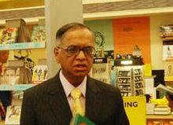

Narayana Murthy was born on 20 August 1946 in Sidlaghatta, Kolar District Karnataka. After completing his school education, he went to the National Institute of Engineering and graduated in 1967 with a degree in Electrical Engineering. In 1969 he received his master's degree from the Indian Institute of Technology in Kanpur.
Murthy started his career at IIM Ahmedabad as chief systems programmer.There he worked on India's first time-sharing computer system and designed and implemented a BASIC interpreter for Electronics Corporation of India Limited. He started a company named Softronics. When that company failed after about a year and a half, he joined Patni Computer Systems in Pune.
Murthy and six software professionals founded Infosys in 1981 with an initial capital injection of Rs 10,000, which was provided by his wife Sudha Murthy. Murthy served as the CEO of Infosys for 21 years from 1981 to 2002 and was succeeded by co-founder Nandan Nilekani.At Infosys he articulated, designed and implemented the Global Delivery Model for IT services outsourcing from India.He was chairman of the board from 2002 to 2006, after which he became chairman of the board and Chief Mentor.In August 2011, he retired from the company, taking the title chairman Emeritus.
Murthy serves as an independent director on the corporate board of HSBC and has served as a director on the boards of DBS Bank, Unilever, ICICI and NDTV. He also serves as a member of the advisory boards and councils of several educational and philanthropic institutions, including Cornell University, INSEAD, ESSEC, Ford Foundation, the UN Foundation, the Indo-British Partnership, Asian Institute of Management, a trustee of the Infosys Prize, a trustee of the Institute for Advanced Study in Princeton, and as a trustee of the Rhodes Trust.He is also Chairman of the Governing board of Public Health Foundation of India.He serves on the Asia Pacific Advisory Board of British Telecommunications. In 2005 he co-chaired the World Economic Forum in Davos.
On 1 June 2013, Murthy returned to Infosys as Executive chairman and Additional Director. On 12 June 2014 it was announced that Murthy would step down as Executive chairman effective 14 June. He would continue as Non-Executive chairman till 10 October. On 11 October, Murthy will be designated as chairman Emeritus.
Murthy also serves on the strategic board which advises the national law firm, Cyril Amarchand Mangaldas, on strategic, policy and governance issues.
His wife, Sudha Murthy née Kulkarni, a B.E. in Electrical Engineering from the B.V.Bhoomaraddi College of Engineering & Technology, Hubballi, stood first in her class and received a gold medal from the Chief Minister of Karnataka. Thereafter, she completed an M.E. in Computer Science from the Indian Institute of Science, standing first in her class and receiving a gold medal from the Indian Institute of Engineers now an Indian social worker and author. She actively continues her philanthropic work through the Infosys Foundation.He has two children, a son Rohan Murty and a daughter Akshata Murthy. Rohan is a Junior Fellow in the Harvard Society of Fellows. On 1 June 2013, he joined Infosys as an executive assistant to his father. He left Infosys effective 14 June 2014. Akshata completed her MBA from Stanford Business School, and is married toRishi Sunak a British Conservative MP